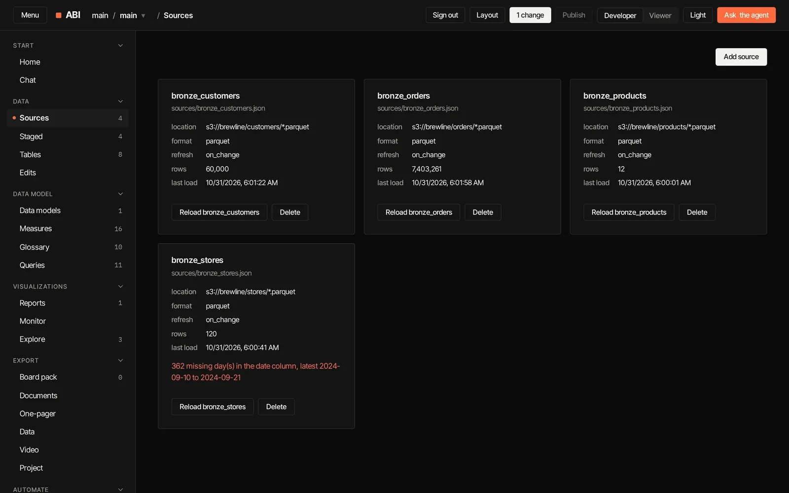
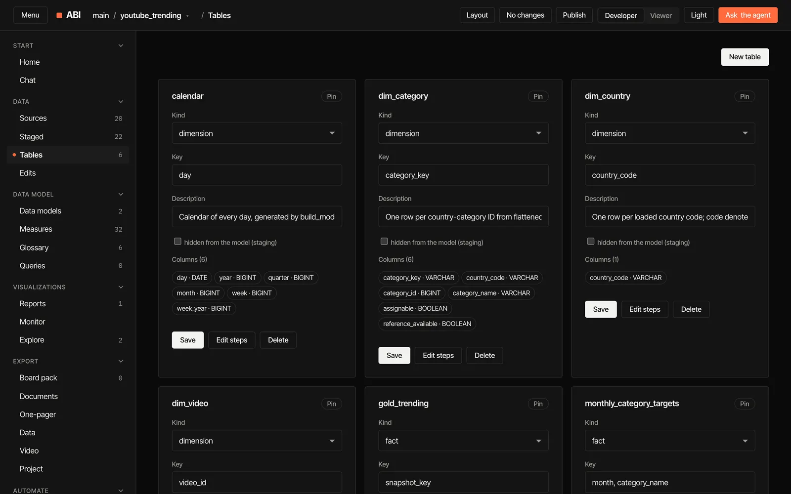
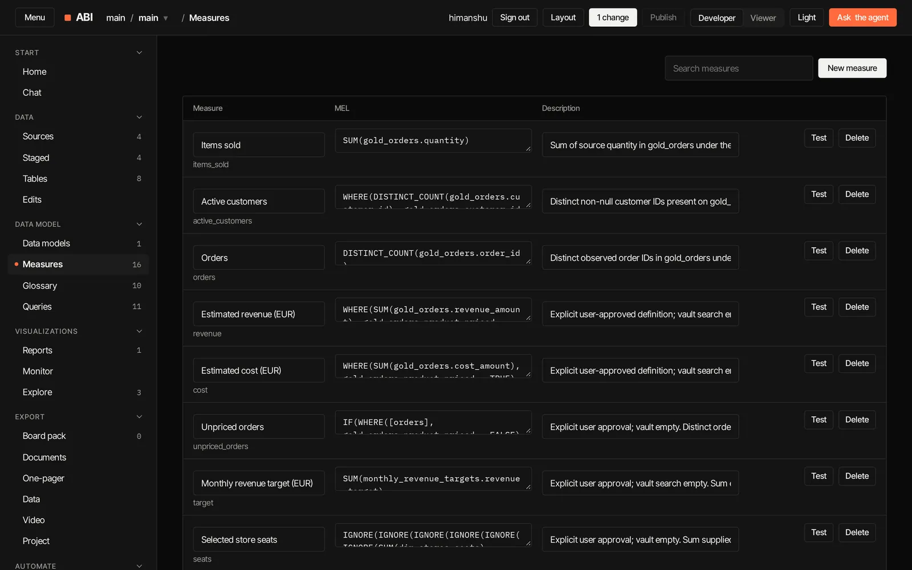
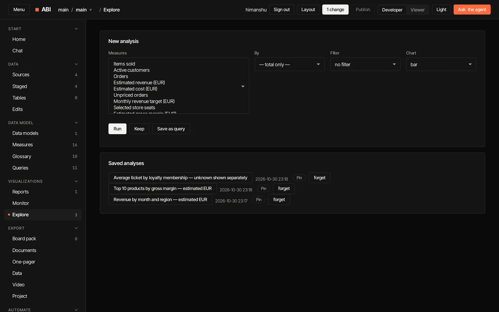
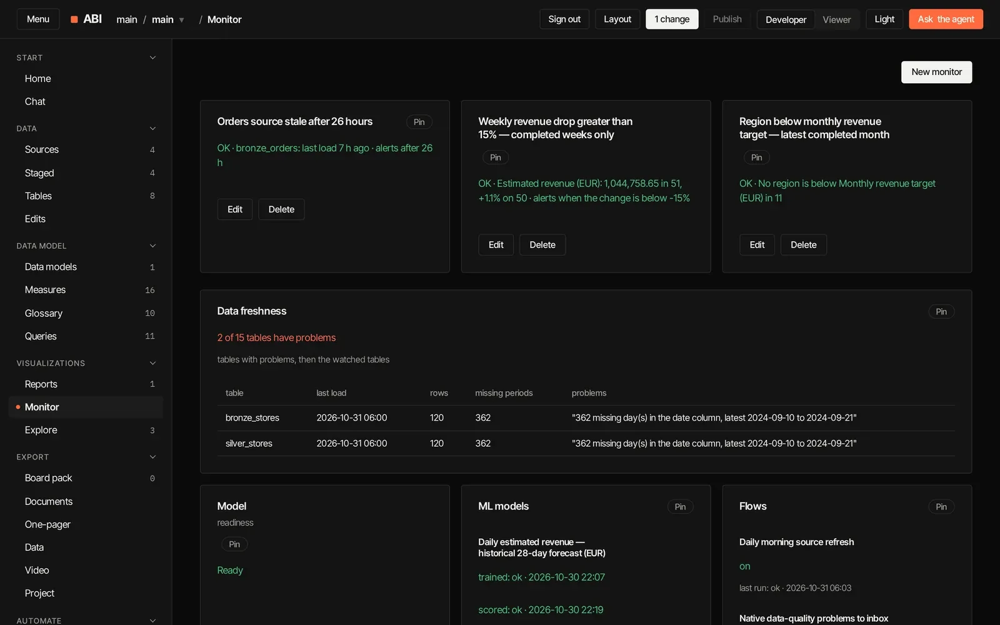
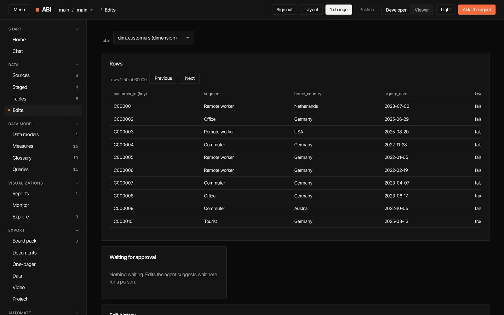
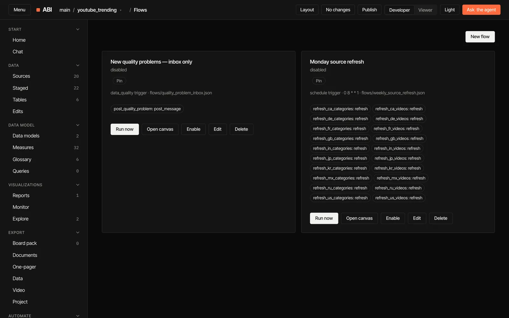
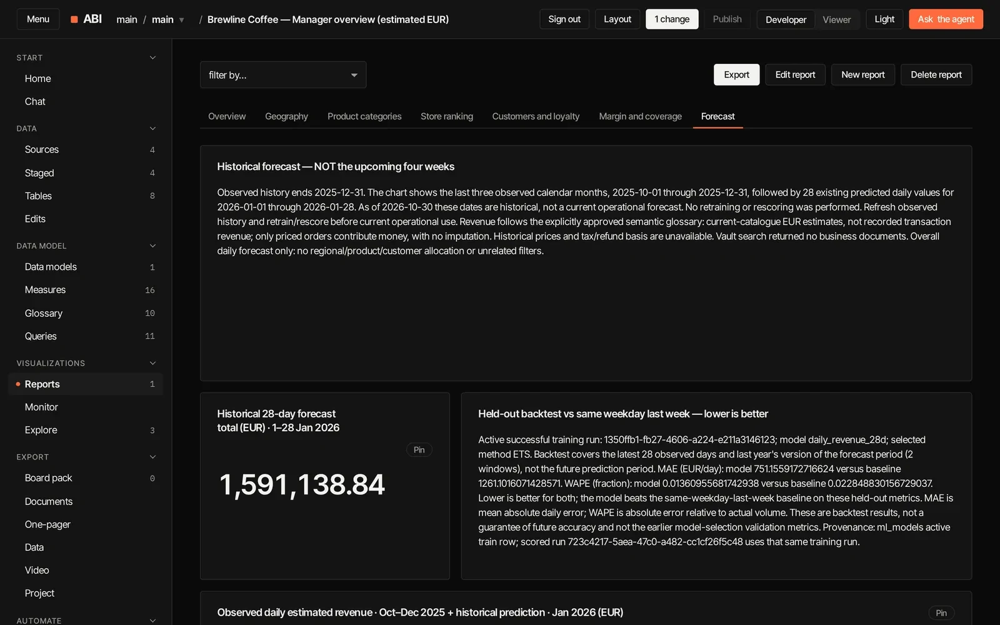
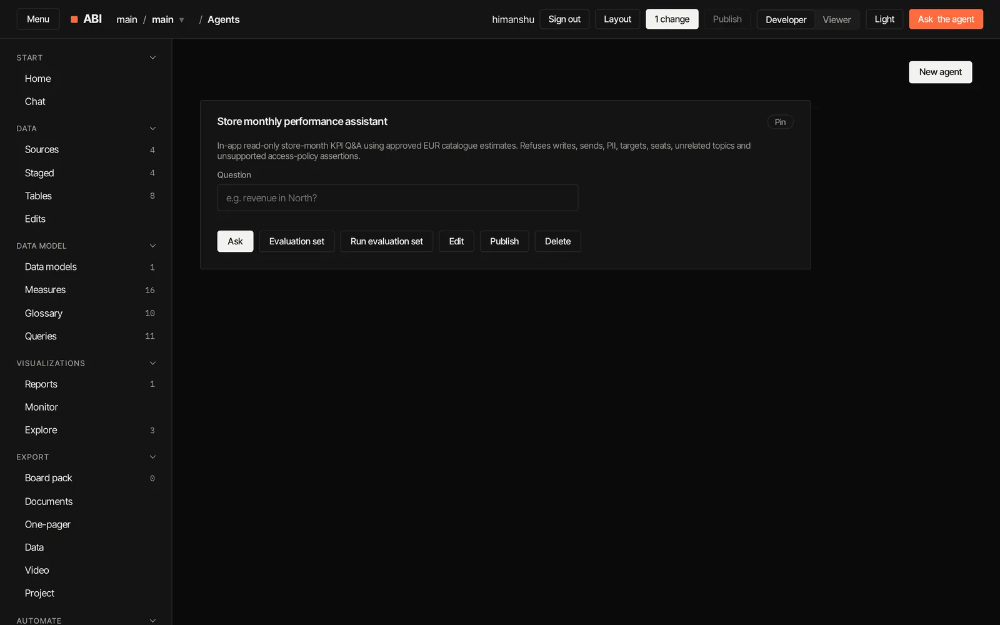
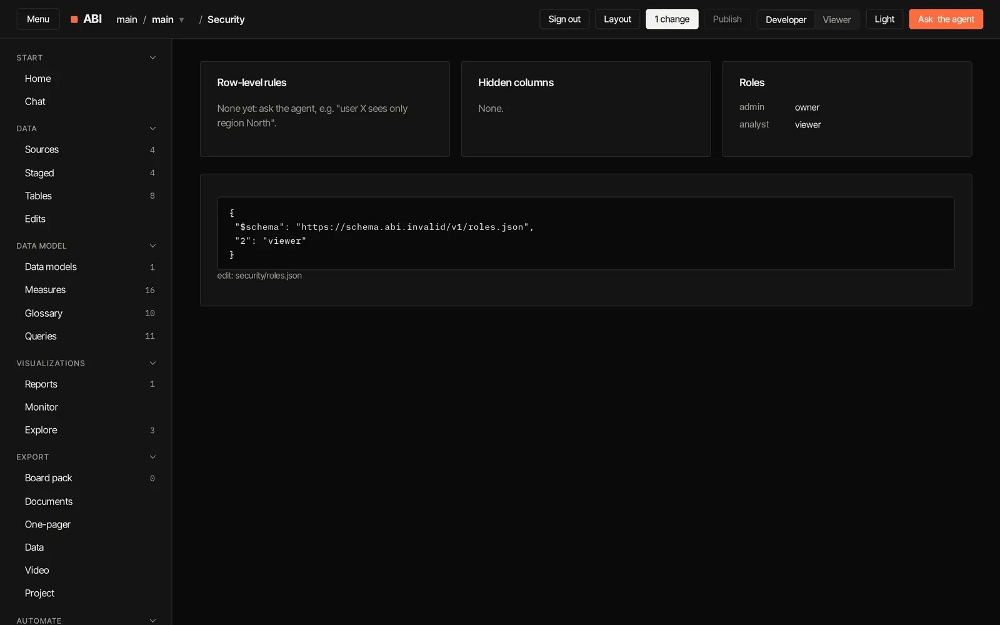

01 / data
Bring the data in.
Upload CSV, Excel, JSON or Parquet files, point at an S3 folder of them, or add a Postgres or MySQL table: public, or private with keys and logins stored encrypted for that host only. Each source refreshes when it changes or on a schedule.
- CSV · Excel · Parquet
- S3 / MinIO / R2
- Postgres / MySQL
- keys stay encrypted
saved as sources/bronze_orders.json

02 / layers
Bronze, silver, gold.
Clean, type, deduplicate and join with steps, then model facts and dimensions with keys and a calendar. The agent reconciles each layer against the one before.
- rename
- filter
- join
- dedupe
- fill nulls
- SQL
saved as model/model.json

03 / semantic layer
One definition of every number.
Measures and a glossary, each with a plain description. Test a measure before you save it; every report, flow, monitor and agent uses the same one.
saved as model/measures.json

04 / reports
Reports people actually read.
Pages of KPIs, tables and charts with filters and cross-filtering. Drag and resize cards, pin them to Home, publish them to Viewers, and export them as PDF, PowerPoint or PNG, the data as Excel or CSV, or a short video.
- KPIs
- charts
- filters
- layouts
- export
saved as reports/manager_overview.json
05 / explore
Ask your own questions.
Pick measures, split by up to two dimensions, filter, sort and chart. Keep the analyses worth keeping.
- ad hoc
- 2 dimensions
- saved analyses
kept as saved analyses

06 / monitor
Know before anyone asks.
Checks for a measure against a value, a target or its last completed period; tables that are late; flows that failed. All on one page, pinnable to Home.
- targets
- vs last period
- freshness
- failed flows
one page of checks

07 / write-back
Plan in place.
Edit rows, or change a total and let ABI spread it across the rows below. The agent's edits wait for your approval, every edit undoes in one step, and an Owner can sync them back to a Postgres or MySQL table after a preview.
- edit rows
- spread totals
- approve
- sync to source
tracked as edit batches with history

08 / automate
Flows that run themselves.
Start on a schedule, after a refresh, when a measure crosses a value or when data quality slips. Refresh, run a tool, ask an agent, score a model, post or send.
- schedules
- triggers
- canvas
- run traces
saved as flows/daily_morning_refresh.json

09 / forecast
Forecasts on your measures.
Forecast, predict, cluster or find unusual days. Each model is trained on your measures and compared with a simple baseline before you trust it.
- forecast
- predict
- cluster
- anomalies
saved as ml/daily_revenue_28d.json

10 / agents & tools
Your own agents, with tests.
Agents scoped to the measures and tables they may use, and tools with typed inputs. Each agent carries an evaluation set; this one passes all 7 of its questions.
- custom agents
- tools
- evaluation sets
- grounded
saved as agents/store_manager.json

11 / govern
Everyone sees only what they should.
Roles, row-level rules and hidden columns. Developers change and commit; Viewers read a published, read-only copy.
- roles
- row-level security
- column rules
- publish
saved as security/roles.json
